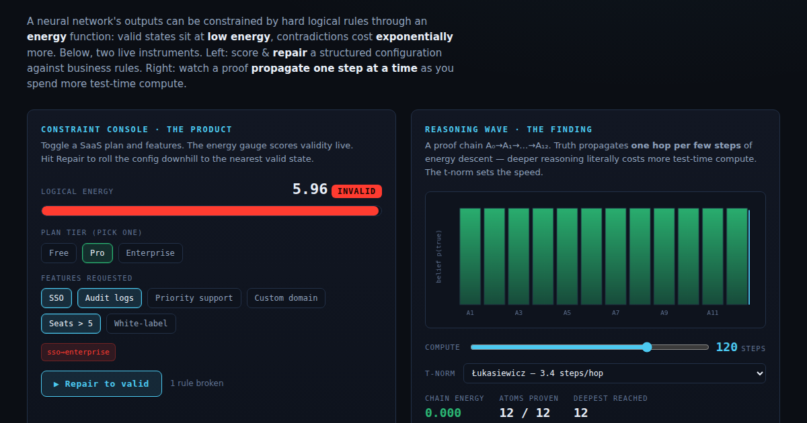
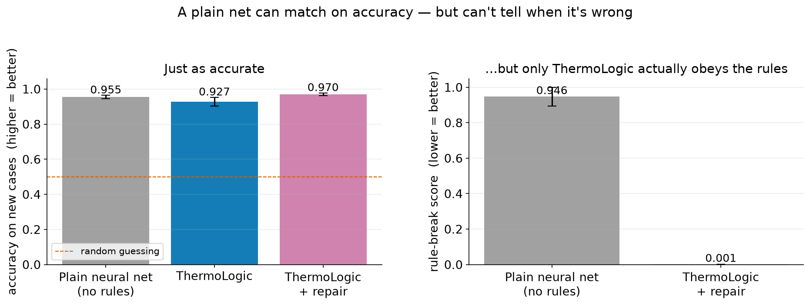
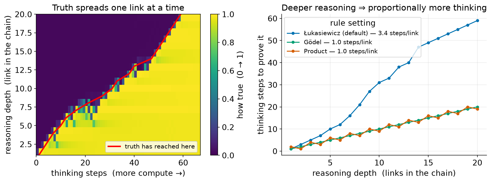

I built a way to catch it — and fix it — using an idea borrowed from physics.
Swipe →
ThermoLogicTeo Qing Cong Eugene
The problem
Trained to sound right, not to be right.
Neural networks optimise for what looks plausible. Nothing inside them forbids a logically impossible answer — an invalid configuration, a self-contradiction.
Worse: they hand it to you with full confidence and no signal that anything is wrong.
The problem02
The idea
Reasoning as thermodynamics
Give every answer an energy. Obey the rules → 0 energy (a valley). Break one → high energy (a hill). "Thinking" is letting the answer roll downhill to a valley.
(An analogy for intuition — not literal physics.)
Reasoning as thermodynamics03
How it works
Score → Explain → Repair
1 · Score
Measure how much an answer breaks your rules. Zero means it obeys all of them — no labels required.
2 · Explain
Surface exactly which rules it broke, in plain English.
3 · Repair
Roll it downhill to the nearest valid answer, changing as little as possible.
How it works04
Live in the browser
A working demonstrator

Toggle a configuration; the gauge scores validity live; one click repairs it to a valid state — the same engine as the PyTorch library, running client-side.
Interactive console05
Example · auto-repair
An invalid signup, fixed
✗ Before — breaks a rule
Pro plan · requests SSO, Audit logs, Seats>5 → SSO needs the Enterprise plan
▼ repair (energy descent)
✓ After — valid
Pro plan · Audit logs, Seats>5 · SSO removed → obeys every rule, minimal change
Repair in action06
Finding 1
The value is reliability, not accuracy

A plain neural net matches on accuracy (0.955) — but its answers are logically inconsistent. Only the energy layer gives a label-free consistency guarantee (0.001).
Reliability, not accuracy07
Finding 2
Deeper reasoning = more compute

Watching the energy descent, truth propagates through a chain of rules one hop at a time — so twice the reasoning depth costs about twice the "thinking." A small original finding.
Depth = test-time compute08
The honest scorecard
Where it helps — and where it doesn't
✅ Guarantees consistency — flags & repairs rule-breaks a plain net can't even detect
✅ Scales linearly where an exact solver explodes (2ᵈ), and is differentiable — trainable through
✅ +26 pts as a semi-supervised signal on a hard rule, when labels are scarce
⚖️ Ties — does not beat an exact solver on raw accuracy
❌ No free lunch — with full labels and easy rules, it's a wash
What the experiments actually show09
Straight talk
What this is (and isn't)
It is
A reproducible proof-of-concept and a small usable tool. Builds openly on prior neuro-symbolic work (LTN, DeepProbLog, Semantic Loss). Every claim tied to a number.
It isn't
An LLM upgrade, or a claim to have "solved" hallucination. It works today on structured outputs with clear rules — configs, forms, tabular decisions.
Scaling the idea toward language models is the road ahead — the vision, not a result.
Honest scope10
Try it · read it · build with it
Have a look 👇
🕹️ Live demo joperjoker.github.io/Project-ThermoLogic
📄 Technical report (PDF) in the repo
💻 Code github.com/joperjoker/Project-ThermoLogic
📦 pip install -e . from thermologic import LogicEnergy
If your team fights constraint-satisfaction on AI outputs — configs, forms, compliance — I'd love to compare notes.